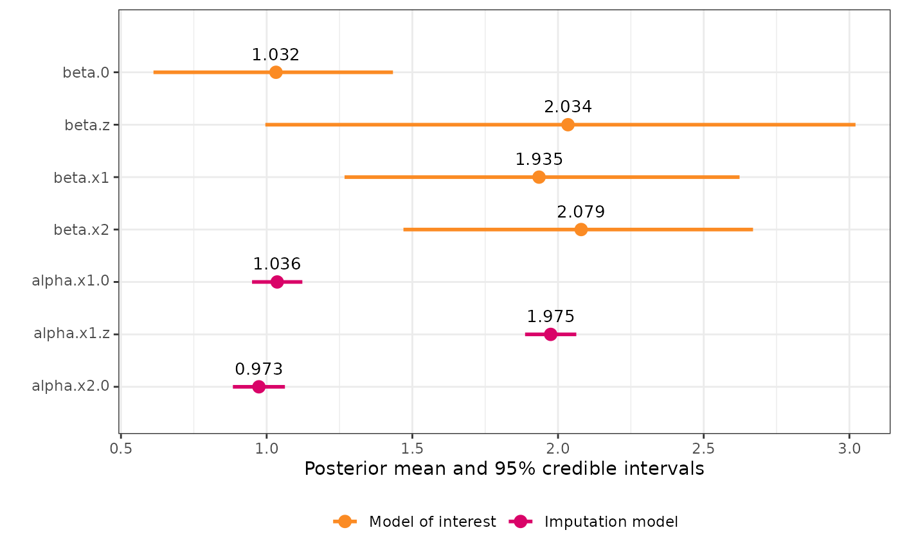

Multiple variables with measurement error and missingness
multiple_error_variables.RmdIn certain cases, it may be necessary to account for measurement
error or missingness in more than one covariate. inlamemi
is structured in a way that accommodates this, and in this example we
illustrate how to specify the input arguments in such a case.
Many of the arguments to fit_inlamemi are specific to
one of the error variables, such as formula_imp (specifying
the formula for the imputation model), error_type
(specifying the type(s) of error for a given variable),
repeated_observations, classical_error_scaling
and prior.beta.error (specifies the prior for the
coefficient of the variable with error). In order for these to be
specified correctly in the case where we have multiple error variables,
the input is structured in lists, where the first list element
corresponds to the argument for the first error variable, the second
list element corresponds to the argument for the second error variable,
etc. That means that the list elements may themselves be vectors of
multiple elements, for instance if the first error variable has Berkson
error and missingness and the second error variable has classical error,
the error_type variable would be
error_type = list(c("berkson", "missing"), "classical").
| Error types | Likelihood | Response | Covariate with error | Other covariate(s) |
|---|---|---|---|---|
| Classical (present in two covariates) | Gaussian | y |
x1, x2
|
z |
In this example, we have a simple case with three covariates
(x1, x2 and z), where two of
these have classical measurement error (x1 and
x2). We believe that x1 is correlated with the
error free covariate z, but that x2 is
independent of the other covariates. Here is our data:
head(two_error_data)
#> y x1 x2 x1_true x2_true z
#> 1 11.479199 3.9241547 2.0065523 2.9122427 1.0015263 0.9819694
#> 2 7.425331 0.1536308 0.6705511 1.4380422 1.2869254 0.4687150
#> 3 2.337587 -0.7050359 0.1312219 -0.1184743 1.5287945 -0.1079713
#> 4 3.006696 -2.1684821 -1.5747725 0.2022806 0.8315696 -0.2128782
#> 5 12.248170 2.7510710 1.8532884 3.1277636 1.1663660 1.1580985
#> 6 13.478741 0.8219551 2.5649969 2.8480912 1.8619438 1.2923548In this case, we will need to specify the entire
control.family argument manually. This is done like
this:
# Multiple error variables
control.family <- list(
# Model of interest
list(hyper = list(prec = list(initial = log(1),
param = c(10, 9),
fixed = FALSE))),
# Classical error model for x1
list(hyper = list(prec = list(initial = log(1),
param = c(10, 9),
fixed = FALSE))),
# Imputation model for x1
list(hyper = list(prec = list(initial = log(1),
param = c(10, 9),
fixed = FALSE))),
# Classical error model for x2
list(hyper = list(prec = list(initial = log(1),
param = c(10, 9),
fixed = FALSE))),
# Imputation model for x2
list(hyper = list(prec = list(initial = log(1),
param = c(10, 9),
fixed = FALSE)))
)If you are uncertain about the order of the model levels, look at the
order in the data stack. fit_inlamemi calls the function
make_inlamemi_stacks to create the data stack, so we can
view it like this:
stack_two_error <- make_inlamemi_stacks(
formula_moi = y ~ x1 + x2 + z,
formula_imp = list(x1 ~ z, x2 ~ 1),
family_moi = "gaussian",
data = two_error_data,
error_type = list("classical", "classical"))And then we can see the order of the models by looking at
stack_two_error$data$names
#> $y_moi
#> [1] "y_moi"
#>
#> $x1_classical
#> [1] "x1_classical"
#>
#> $x1_imp
#> [1] "x1_imp"
#>
#> $x2_classical
#> [1] "x2_classical"
#>
#> $x2_imp
#> [1] "x2_imp"Then we go on to fit the model:
two_error_model <- fit_inlamemi(formula_moi = y ~ x1 + x2 + z,
formula_imp = list(x1 ~ z, x2 ~ 1),
family_moi = "gaussian",
data = two_error_data,
error_type = list("classical", "classical"),
prior.beta.error = list(c(0, 1/1000), c(0, 1/1000)),
control.family = control.family,
control.predictor = list(compute = TRUE)
)The summary and plot can be viewed as normal:
summary(two_error_model)
#> Formula for model of interest:
#> y ~ x1 + x2 + z
#>
#> Formula for imputation model:
#> [[1]]
#> x1 ~ z
#>
#> [[2]]
#> x2 ~ 1
#>
#>
#> Error types:
#> [[1]]
#> [1] "classical"
#>
#> [[2]]
#> [1] "classical"
#>
#>
#> Fixed effects for model of interest:
#> mean sd 0.025quant 0.5quant 0.975quant mode kld
#> beta.0 1.033920 0.2111200 0.6122502 1.038284 1.438846 1.038868 6.090787e-07
#> beta.z 2.044032 0.6622519 0.9610090 2.099414 3.051609 2.067508 2.501288e-05
#>
#> Coefficient for error prone variable:
#> mean sd 0.025quant 0.5quant 0.975quant mode
#> beta.x1 1.928938 0.3609915 1.232617 1.924114 2.653852 1.90348
#> beta.x2 2.071846 0.3172172 1.436110 2.075654 2.685045 2.09188
#>
#> Fixed effects for imputation model:
#> mean sd 0.025quant 0.5quant 0.975quant mode
#> alpha.x1.0 1.0361516 0.04399628 0.9498651 1.0361516 1.122438 1.0361516
#> alpha.x1.z 1.9748165 0.04479205 1.8869694 1.9748165 2.062664 1.9748165
#> alpha.x2.0 0.9734144 0.04552235 0.8841374 0.9734144 1.062691 0.9734144
#> kld
#> alpha.x1.0 9.176956e-13
#> alpha.x1.z 9.407141e-13
#> alpha.x2.0 2.009055e-13
#>
#> Model hyperparameters (apart from beta.x1, beta.x2):
#> mean sd 0.025quant 0.5quant
#> Precision for model of interest 1.1418231 0.3637030 0.5931639 1.0869434
#> Precision for x1 classical model 1.0803427 0.2215441 0.7019635 1.0608975
#> Precision for x1 imp model 1.0338092 0.2044954 0.6965543 1.0118747
#> Precision for x2 classical model 1.0282241 0.1731916 0.7347074 1.0121975
#> Precision for x2 imp model 0.9379867 0.1530227 0.6689800 0.9270564
#> 0.975quant mode
#> Precision for model of interest 2.009561 0.9846545
#> Precision for x1 classical model 1.570183 1.0267793
#> Precision for x1 imp model 1.498484 0.9661522
#> Precision for x2 classical model 1.414670 0.9780613
#> Precision for x2 imp model 1.269720 0.9078113
plot(two_error_model)